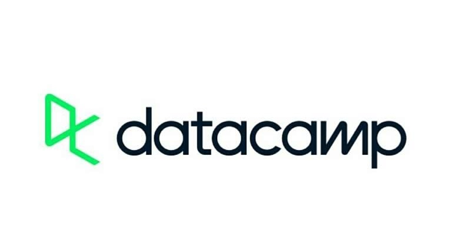
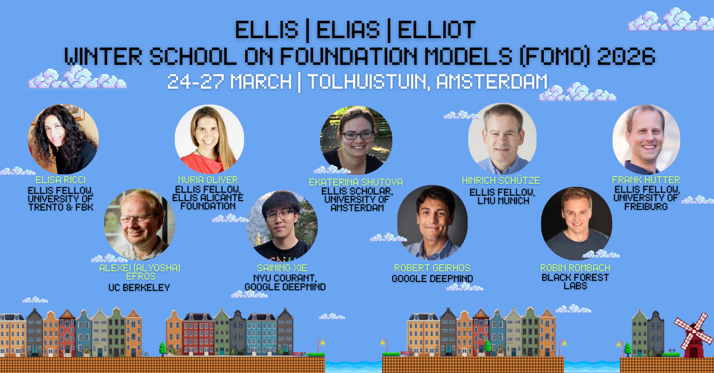
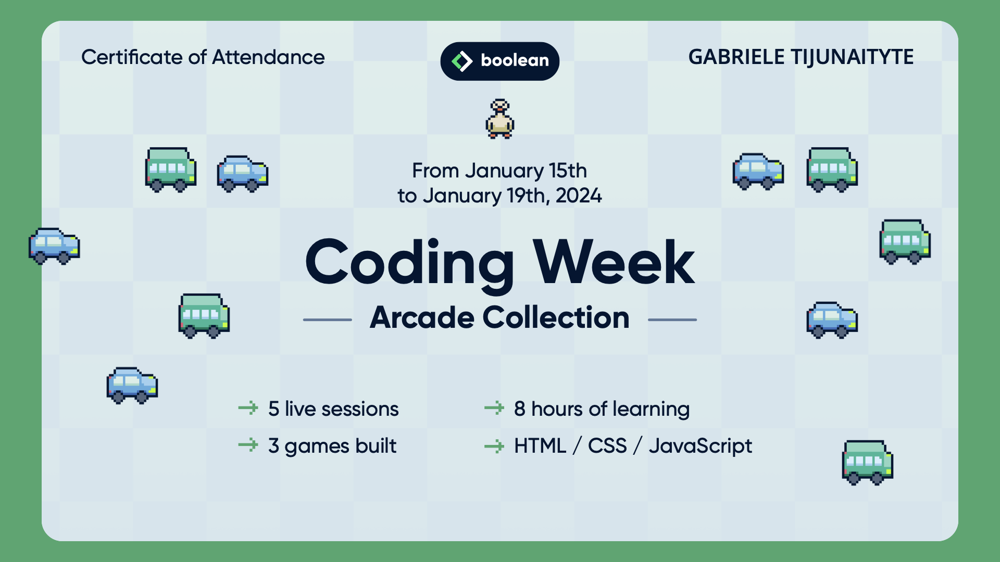
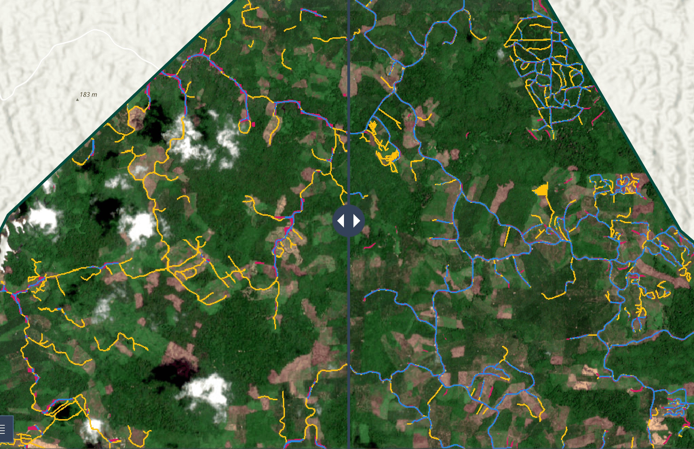
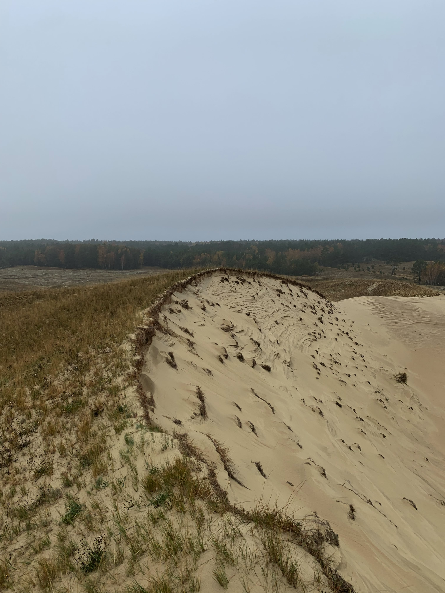

I am Gabrielė Tijūnaitytė, a Research Engineer in the Artificial Intelligence group at
Wageningen University, specialising in AI for Earth Observations.
With a strong foundation in Geo-Information Science, my work lies at the intersection of deep
learning, computer vision, and geospatial analysis. I am dedicated to building impactful,
data-driven solutions to environmental challenges. My primary expertise involves working with
multi-modal satellite imagery, large vision-language models, and contrastive deep learning
frameworks.
Outside work, I enjoy trying out new recipes and running.
Working on self-explainable AI for Earth Observation foundation models through language alignment, and supporting the research in the group.
Investigated architecture customisation and fine-tuning of Large Vision–Language Models for dam infrastructure classification and geo-reasoning applications.
Supported teaching and practicals in Geoscripting and Big Data courses — covering scripting for spatial analysis and data processing using Python, R, and Bash.
Led a student team in developing a deep learning-based super-resolution pipeline to enhance road detection accuracy in satellite imagery. Read blog post.
Developed a database for isotope records to support environmental research; conducted literature reviews and delivered presentations.
| GPA: 9.0/10.0
Focus on Machine and Deep Learning & Data Sciences.
Thesis: Developed a contrastive deep learning framework for matching marine debris patches across multi-modal PlanetScope and Sentinel-2 imagery.
Award: Winner of the Folkert Hellinga MSc Award 2025 and the audience award for best pitch.
| GPA: 9.8/10.0
Focus on Remote Sensing & Environmental Sciences.
| GPA: 9.9/10.0
Thesis: The Dynamics of Pilkosios Dunes Relief During 2010-2022, Based on the Digital Elevation Model Analysis.

Python Data Associate

Winter School on Foundation Models

HTML/CSS/JavaScript Coding Week

Led a student team applying deep learning-based super-resolution on satellite imagery to enhance road detection capacity.
See StoryMap Read Blog Post
GetOnGame is a Java-based recreation of the classic Dutch card game "Stap Op" developed as a Software Engineering course project.
See GitHub
The dynamics of Pilkosios Dunes relief during 2010–2022, based on the digital elevation model analysis
ReadFor more information about me or my work feel free to get in touch:
gabriele.tijunaityte@gmail.com